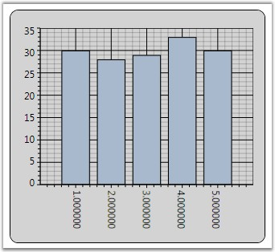

ChartAxis labels could be rotated with custom angles. Axis.LabelRotateAngle property is used to define the angle in which the Axis Labels need to be rotated.
The below given code snippet could be used to customize the labels to be rotated with 90'.
|
[XAML]
<sfchart:ChartArea.PrimaryAxis> <sfchart:ChartAxis LabelRotateAngle="90" LabelFormat="0.000000" /> </sfchart:ChartArea.PrimaryAxis> |
|
[C#]
//Sets the Label to be rotated with 90' angle Area.PrimaryAxis.LabelRotateAngle = 90; |
Below given figure illustrates Chart with Primary Axis labels rotated with 90' angle

Figure 211: Primary Axis Labels rotated with 90 degrees Angle
 Note: LabelRotateAngle property will not have
effect when the Axis.IntersectAction property is set as Rotate.
Note: LabelRotateAngle property will not have
effect when the Axis.IntersectAction property is set as Rotate.
See Also
Chart Font Settings, Chart Axis Label, Intersecting Labels